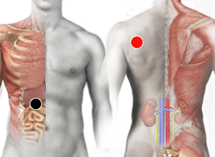

Vesícula
Pares
vesícula - escápula
vesícula - paratiroides

Pares:
Vesícula - escápula: Desinflama la vesícula
Vesícula - paratiroides: para cálculos (se pueden disolver)
Generalidades:
Cálculos en la vesícula biliar su tamaño puede variar desde unos cuantos milímetros hasta varios centímetros. Están formados principalmente de colesterol o de bilirrubina. Algunos de los factores que favorecen su formación son: